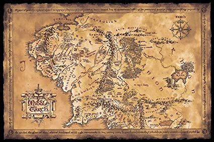

Ficha Pelicula
La Comunidad del Anillo

Ficha Tecnica
| Dirección | Peter Jackson |
|---|---|
| Producción |
Peter Jackson Barrie M. Osborne Fran Walsh |
| Guión |
Peter Jackson Fran Walsh Philippa Boyens |
| Basada en | La Comunidad del Anillo de J.R.R. Tolkien |
| Música | Howard Shore |
Ficha Tecnica
| País | Nueva Zelanda |
|---|---|
| Año |
Peter Jackson Barrie M. Osborne Fran Walsh |
| Guión |
Peter Jackson Fran Walsh Philippa Boyens |
| Basada en | La Comunidad del Anillo de J.R.R. Tolkien |
| Música | Howard Shore |
Pelicula
Información
El Señor de los Anillos: la Comunidad del Anillo (título original en inglés: The Lord of the Rings: The Fellowship of the Ring) es una película de aventuras y fantasía de 2001 dirigida por Peter Jackson y basada en el primer volumen de El señor de los Anillos, de J. R. R. Tolkien (1954-55).234 Es la primera entrega de la trilogía cinematográfica de El Señor de los Anillos, compuesta también por Las dos torres y El retorno del Rey, que a su vez adaptan los otros dos volúmenes de la saga literaria de fantasía.
Ambientada en la Tierra Media, cuenta la historia del Señor Oscuro Sauron, que está buscando el Anillo Único, el cual ha acabado en poder del hobbit Frodo Bolsón (Elijah Wood). El destino de la Tierra Media está en juego mientras Frodo y ocho compañeros que forman la Compañía del Anillo comienzan un largo y peligroso viaje hacia el Monte del Destino en la tierra de Mordor, que es el único lugar en el que el anillo puede ser destruido.
La Comunidad del Anillo fue nominada a trece premios Óscar en su 74.ª edición en 2002, entre estos mejor película, mejor director y mejor actor de reparto (Ian McKellen), y ganó los de mejor fotografía, mejor maquillaje, mejor banda sonora y mejores efectos visuales. Asimismo, fue galardonada con cuatro premios BAFTA del cine británico, incluidos mejor película y mejor director. En el año 2007 la película fue incluida por votación popular en el puesto 50 de la lista de las 100 mejores películas estadounidenses de la historia elaborada por el American Film Institute, además de ser incluida como la segunda mejor en el género fantástico. En el listado de las 500 mejores películas que recopiló en 2008 la revista Empire, La Comunidad del Anillo fue incluida en el número 24.